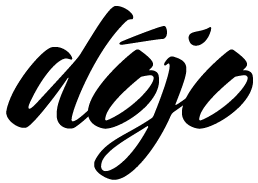

Dojo Toolkit
Welcome to the Dojo Toolkit, an open source (AFL) project for next-generation web
applications using current-generation technologies.
Mailing List
Most of the activity right now is on the mailing list:
http://netwindows.org/mailman/listinfo/ng-dhtml_netwindows.org
Documents
Discussion of these documents goes on in the mailing list:
CVS
If you have a shell account, you can checkout a remote workspace by:
# cd
# CVS_RSH=ssh CVSROOT=":ext:username@dojotoolkit.org:/var/cvs" cvs -z3 checkout -P dojo
or a local workspace by:
# cd
# CVSROOT=/var/cvs cvs co dojo
If you are a remote anonymous user, you can checkout a workspace by:
# CVSROOT=:pserver:anonymous@dojotoolkit.org:/root cvs login
(type empty return for password)
# CVSROOT=:pserver:anonymous@dojotoolkit.org:/root cvs -z3 co -P dojo
In either case, subsequent updates are done by:
# cvs -z3 update -Pd
Anyone can browse the CVS repository using either cvstrac or cvsmonitor.
Blog and Wiki
There is a blog and a wiki but they aren't
used much right now.
Antecedents
There are several ECMAScript libraries that have been authored by founding
members of the Dojo Toolkit group. You might want to examine these until we get the "NG" thing done:
$Id: index.html,v 1.5 2004/07/09 23:51:04 mda Exp $
{kind=link}